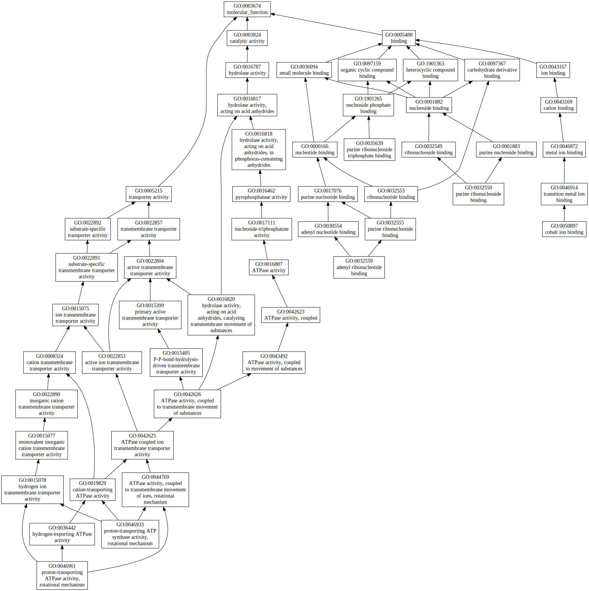
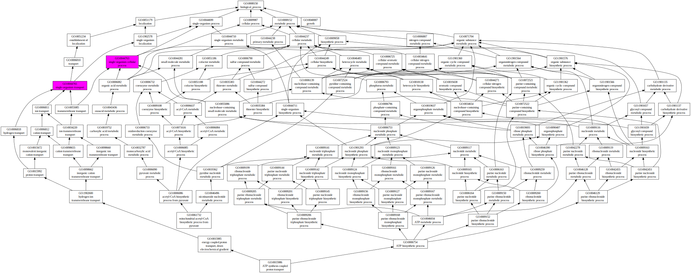
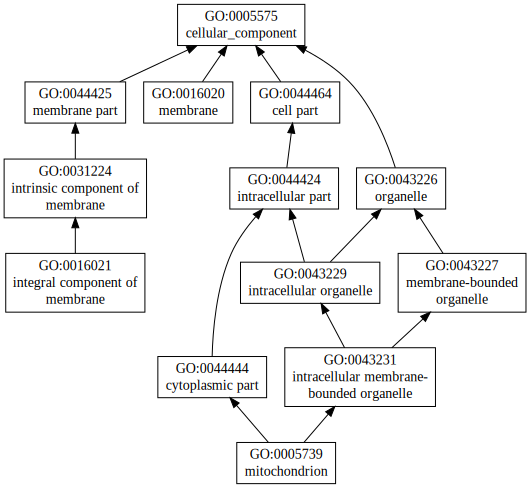

|

|
| GO term | CscoreGO | Name |
| GO:0043492 | 0.11 | ATPase activity, coupled to movement of substances |
| GO:0016820 | 0.11 | hydrolase activity, acting on acid anhydrides, catalyzing transmembrane movement of substances |
| GO:0015405 | 0.11 | P-P-bond-hydrolysis-driven transmembrane transporter activity |
| GO:0050897 | 0.10 | cobalt ion binding |
| GO:0035639 | 0.03 | purine ribonucleoside triphosphate binding |
| GO:0032559 | 0.03 | adenyl ribonucleotide binding |
| GO:0032550 | 0.03 | purine ribonucleoside binding |
| GO:0046961 | 0.01 | proton-transporting ATPase activity, rotational mechanism |
| GO:0046933 | 0.01 | proton-transporting ATP synthase activity, rotational mechanism |
| Download full result of the above consensus prediction. |
| Click the graph to show a high resolution version. |
| (a) | CscoreGO is the confidence score of predicted GO terms. CscoreGO values range in between [0-1]; where a higher value indicates a better confidence in predicting the function using the template. |
| (b) | The graph shows the predicted terms within the Gene Ontology hierachy for Molecular Function. Confidently predicted terms are color coded by CscoreGO: |
| | [0.13,0.5) | [0.5,0.6) | [0.6,0.7) | [0.7,0.8) | [0.8,0.9) | [0.9,1.0] |
|
|
|

|
| GO term | CscoreGO | Name |
| GO:0044763 | 0.28 | single-organism cellular process |
| GO:0044765 | 0.10 | single-organism transport |
| GO:1901564 | 0.07 | organonitrogen compound metabolic process |
| GO:0044711 | 0.07 | single-organism biosynthetic process |
| GO:0044249 | 0.07 | cellular biosynthetic process |
| GO:0009117 | 0.07 | nucleotide metabolic process |
| GO:1901576 | 0.06 | organic substance biosynthetic process |
| GO:0061732 | 0.02 | mitochondrial acetyl-CoA biosynthetic process from pyruvate |
| GO:0015986 | 0.02 | ATP synthesis coupled proton transport |
| GO:0040007 | 0.01 | growth |
| Download full result of the above consensus prediction. |
| Click the graph to show a high resolution version. |
| (a) | CscoreGO is the confidence score of predicted GO terms. CscoreGO values range in between [0-1]; where a higher value indicates a better confidence in predicting the function using the template. |
| (b) | The graph shows the predicted terms within the Gene Ontology hierachy for Biological Process. Confidently predicted terms are color coded by CscoreGO: |
| | [0.08,0.5) | [0.5,0.6) | [0.6,0.7) | [0.7,0.8) | [0.8,0.9) | [0.9,1.0] |
|
|
|

|
| Download full result of the above consensus prediction. |
| Click the graph to show a high resolution version. |
| (a) | CscoreGO is the confidence score of predicted GO terms. CscoreGO values range in between [0-1]; where a higher value indicates a better confidence in predicting the function using the template. |
| (b) | The graph shows the predicted terms within the Gene Ontology hierachy for Cellular Component. Confidently predicted terms are color coded by CscoreGO: |
| | [0.14,0.5) | [0.5,0.6) | [0.6,0.7) | [0.7,0.8) | [0.8,0.9) | [0.9,1.0] |
|
|
|